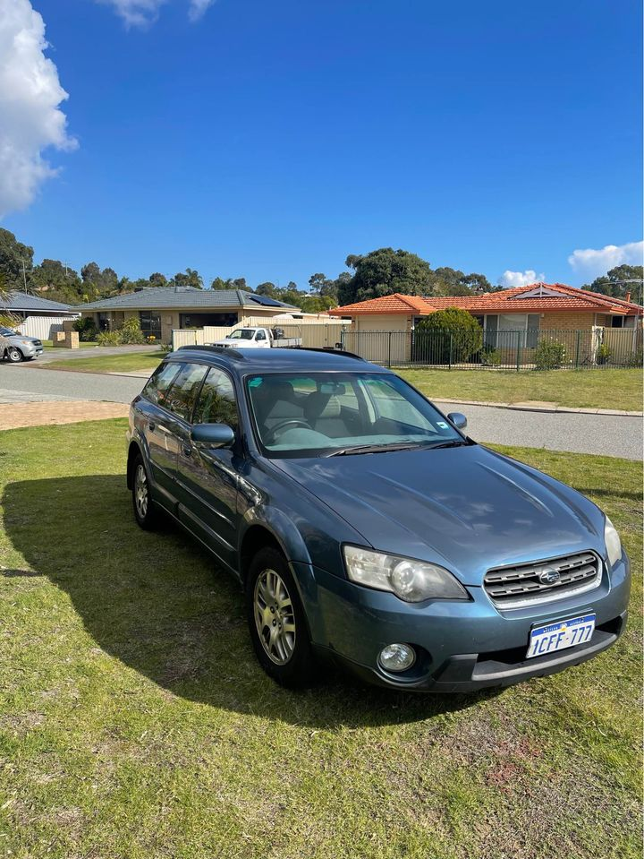

When it comes to spare and replacement parts for your Subaru the team at Fremantle wreckers has one of the largest range of Subaru spare parts in Perth and will be able to help. We have a huge range of Subaru engines, transmissions, suspension and mechanical parts of which are all in perfect working condition. All of our Subaru parts have been thoroughly tested and reconditioned so you will have the confidence that your spare part won't let you down from Perths leading Subaru auto recyclers.
e of your missing parts quickly and with the right quality and affordable price to suit your budget. Our team can also help you when you need to repair the Subaru engine, as well as new battery, alternator, muffler and bushings. We have a genuine garage to repair or overhaul your Subaru if required with all our Subaru parts being backed by a genuine Subaru Warranty. Subaru Perth wreckers is the only location in the Perth car crazy city to source the best and most affordable Subaru parts.
We are located at 87-91 Vaughan Street, Fremantle WA, 6000, Australia. Call us on (08) 9444 2343 Visit us at our wrecking yard
The Fremantle wreckers main business focus is Subaru parts and each day we'll be able to provide you with a list of parts, how much you can get for it and the day you can pick it up. At Fremantle wreckers we take pride in our quality work, highly trained staff and knowledgeable customers. We do not use dangerous chemicals on our vehicles and we will explain each part in full detail so that you can make an informed decision. Our team is friendly and will always be happy to discuss Subaru parts If you're looking for Subaru parts or Subaru car parts then please do not hesitate to call our customer service line. Our team is happy to help you decide which parts are the best fit for your vehicle. We will be able to help you find your favourite Subaru parts that fits your model perfectly.

We have plenty of Subaru parts in stock We only carry a quality range of Subaru parts We deal only with the highest quality Subaru parts We have a full range of Subaru engine parts available for both domestic and export market We have a selection of Subaru transmission parts that are in perfect order We have everything you need to repair your Subaru To keep up to date with the latest news from Fremantle wreckers simply visit our website www.fremantlewreckers.com.au This is a sponsored article in partnership with Fremantle wreckers.
When it comes to spare and replacement parts for your Subaru the team at Fremantle wreckers have one of the largest range of Subaru spare parts in Perth and will be able to help. We have a huge range of Subaru engines, transmissions, suspension and mechanical parts of which are all in perfect working condition. All of our Subaru parts have been thoroughly tested and reconditioned so you will have the confidence that your spare part won't let you down from Perths leading Subaru auto recyclers.
Address:103 Sheffield Rd, Welshpool WA 6106
Phone: (08) 9358 1392